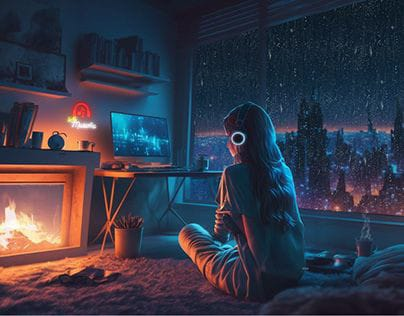
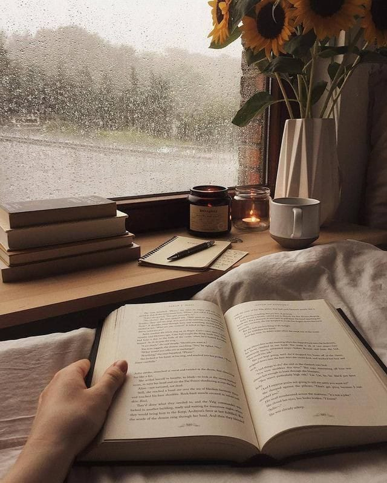
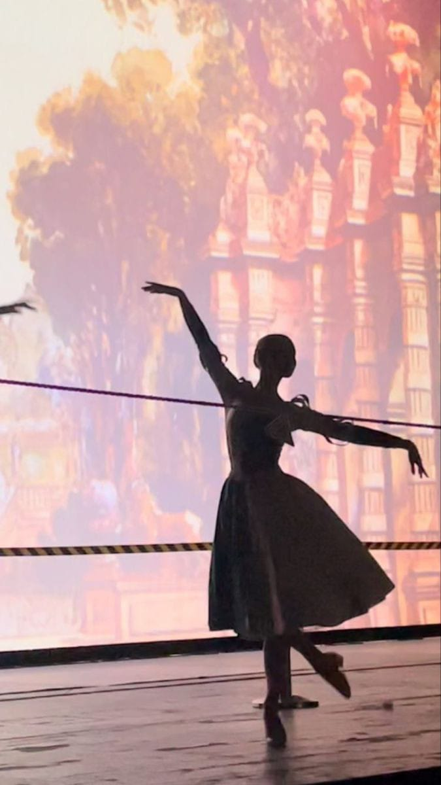
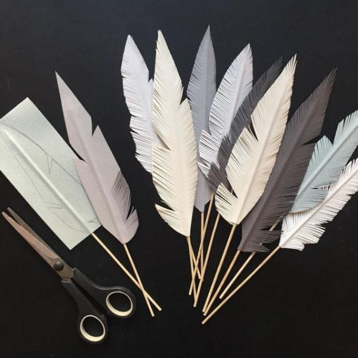

My Hobbies
Listening to music is not just a hobby for me; it's a source of pure joy and solace. When I immerse myself in the melodies and rhythms, it's as if a weight is lifted off my shoulders, and all my worries and stresses melt away. The harmonies and lyrics resonate deep within, touching my soul and bringing me a sense of peace and contentment. Music has the incredible power to uplift my spirits, energize me, and transport me to a place of pure bliss. It is my refuge, my escape, and my constant companion, always there to bring a smile to my face and make me feel good.
I absolutely love singing. It's one of my favorite hobbies. Whenever I sing, it brings me so much joy. Whether I'm singing in the shower, in my room, or even in front of others, it makes me feel free and expressive. When I sing, I can convey my emotions and connect with people in a special way. It's my creative outlet and it makes me really happy.
Reading the diaries of saints is a hobby that fills me with immense joy and spiritual nourishment. The intimate glimpses into their lives, their struggles, and their deep faith inspire me to deepen my own connection with the divine. As I immerse myself in their writings, I find solace, guidance, and a profound sense of purpose. These diaries are a treasure trove of wisdom and a source of constant inspiration on my spiritual journey. Through the words of the saints, I am reminded of the transformative power of faith and the boundless love of the divine.
Dancing is my absolute favorite hobby. It brings me so much joy and excitement. When I dance, I feel free and alive. It's a way for me to express myself without words, just through movement. Whether it's a formal dance class or just dancing around in my room, it fills me with energy and happiness. Dancing keeps me active, improves my coordination, and allows me to let go of any stress or worries. It's my ultimate form of self-expression and I can't imagine my life without it.
Crafting is a delightful hobby that sparks my creativity and fills my leisure time with joy. Whether it's painting, knitting, or making handmade cards, engaging in crafting activities allows me to explore my artistic side. I love the process of bringing raw materials together and transforming them into something beautiful and meaningful. It's a therapeutic and meditative experience that helps me relax and unwind. Crafting also provides me with a sense of accomplishment and satisfaction when I see the finished product of my own hands. It's a hobby that allows me to create, express myself, and add a touch of personal charm to the world around me.